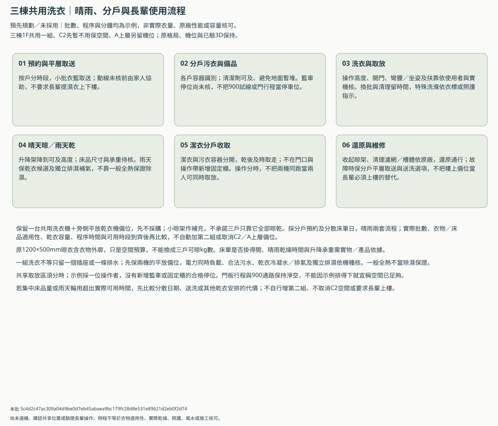
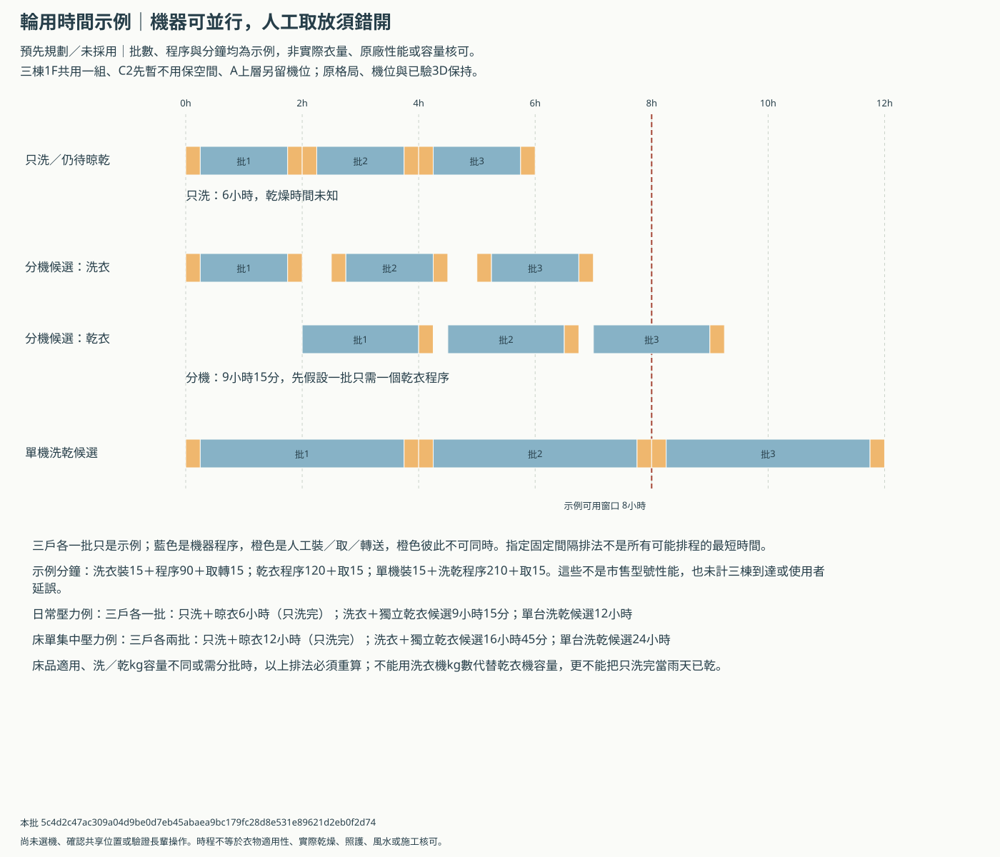

三棟共用洗衣：日常、床單與雨天輪用
所有批數與分鐘均為壓力示例，不是屋主實際衣量、原廠性能或選機結果。共享主位置、真實乾衣容量與長輩操作均未核；原格局不改。
保留一台共用洗衣機＋旁側平放乾衣機備位，先不採購；小晾架作補充，不承諾三戶只靠它全部晾乾。採分戶預約及分散床單日，晴雨兩套流程；實際批數、衣物／床品適用性、乾衣容量、程序時間與可用時段到齊後再比較，不自動加第二組或取消C2／A上層備位。
輪用時間比較
窗口先用8小時作示例；不是已允許連續運轉或夜間洗衣。
| 假設工作量 | 配置方向 | 示例時間 | 完成口徑 | 窗口內示例批數 |
|---|---|---|---|---|
| 日常壓力例：三戶各一批 | 只洗＋晾衣 | 6小時 | 只洗完，晾乾未知 | 4批（示例） |
| 日常壓力例：三戶各一批 | 洗衣＋獨立乾衣候選 | 9小時15分 | 假設每批一個乾衣程序，未實測 | 2批（示例） |
| 日常壓力例：三戶各一批 | 單台洗乾候選 | 12小時 | 假設每批一個乾衣程序，未實測 | 2批（示例） |
| 床單集中壓力例：三戶各兩批 | 只洗＋晾衣 | 12小時 | 只洗完，晾乾未知 | 4批（示例） |
| 床單集中壓力例：三戶各兩批 | 洗衣＋獨立乾衣候選 | 16小時45分 | 假設每批一個乾衣程序，未實測 | 2批（示例） |
| 床單集中壓力例：三戶各兩批 | 單台洗乾候選 | 24小時 | 假設每批一個乾衣程序，未實測 | 2批（示例） |
先看長輩與晴雨流程


再看兩機與人工取放如何錯開


先跟建商／A設計師對齊的接口
| 原議題ID | 主題 | 待資料後核對 |
|---|---|---|
| LAU-03 | 安裝、開門與換機 | 原850×750mm各機安裝預算保留；實際機身＋門片＋接管＋散熱＋拆換另核，洗／乾kg容量不同時須重分批。 |
| LAU-04 | 雨天濕度與容量 | 1200×500mm只是含衣物外廓，不能換算可晾kg；核晾架承重、衣物間距、床單、乾衣機種及排濕／補氣、冷凝水。 |
| LAU-05 | 鄰臥室噪音振動 | 可用時段與夜間限制待同版聲學／隔振資料，不能用示例8小時自行承諾可連跑或移到夜間。 |
| LAU-06 | 給排水、防水與止水 | 洗衣污水核合法污水終端，乾衣冷凝水依機型核；地面防水排水及漏水止水不借雨水溝或任意地排。 |
| LAU-07 | 電力與設備預埋 | 兩機備位不等既有迴路可同時啟動；容量、迴路、接地漏電與插座位置依電氣設計，不拉延長線跨濕地。 |
| LAU-08 | 共用管理與A交接 | 分戶預約、床品分日、潔污容器、清潔保養及水電費先留討論；建商與A另聘設計師在預埋前對同版接口。 |
保留的限制
- 所有批數與分鐘均為壓力示例，未取自屋主人數、實際衣量或產品型錄；不是選機、承諾工時或乾衣完成驗證。
- 一批假設可用同一個乾衣程序，實際洗／乾容量或衣標不合就須分批，時程不能沿用；床單例不表示棉被或大型床品可洗烘。
- 洗／乾操作帶在原平面重疊；示例令人工操作互斥，可同時運轉不代表多人同時取放或無障礙成立。
- 只洗的時間不含晾乾；未有氣候、衣量與排濕資料，晾乾時數及三戶滿足程度均保留未知。
- 兩機採固定間隔錯開批次，找出該種排法可行的最小整數分鐘間隔，不聲稱所有排程的全局最短；還需計三棟取送與實際回應延誤。
- 不把小晾架降下外廓或未核籃車停位當成可用儲藏；門行程到乾衣備位20mm仍需產品同版重核。
- 原A前側瓶頸、後口條件、晾架占轉位、設備完成面／維修、噪音與2.232㎡加深代價仍在；未擴陽台、縮孝親房、釋放MDF或改主3D。
- B後門預設／前門備案及祭祀、搬轎、淋浴保持；新共用流程不穿神明堂，也不推定A／C已有合法共同後路。
實際容量是否足夠：未知；晾乾時間：未知。21欄實際條件全空，不把未知當0。回饋沿原ABC-DAILY-CHAIN與LAU-03～08，不另要求重填需求。
本批 5c4d2c47ac309a04d9be0d7eb45abaea9bc179fc28d8e531e89621d2eb0f2d74；只有檔案與示例排程檢查，未啟動瀏覽器、實機、長輩操作或專業驗收。